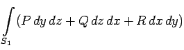

Wenn das Integrationsgebiet, d.h. das Flächenstück S, auf irgendeine Art in Teilflächenstücke S1 und S2 eingeteilt ist, dann gilt:

(8.164)
Bei Vertauschung von Außen- und Innenseite der Fläche, d.h. bei Änderung der Orientierung der Fläche, ändert das Integral sein Vorzeichen:
(8.165)
wobei mit S+ und S- ein und dieselbe Fläche bezeichnet ist, jedoch für entgegengesetzte Orientierung.
Im allgemeinen hängt das Oberflächenintegral sowohl von der das Flächenstück S begrenzenden Kurve als auch von der Fläche selbst ab. Daher sind die Integrale über verschiedene nichtgeschlossene Flächen S1 und S2 mit der gleichen Randkurve K im allgemeinen verschieden (s. Abbildung):